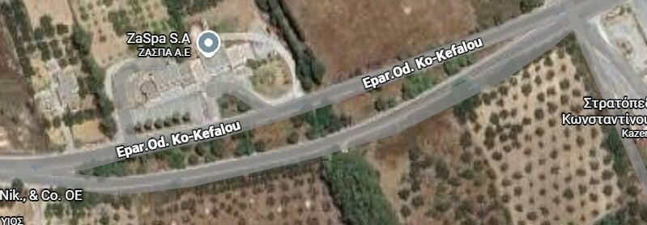
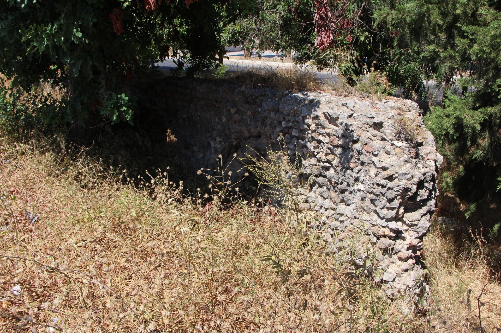

Meer dan 2000 jaar oude Romeinse waterleiding met bogen midden in de weg – later ook een Italiaans aquaduct ernaast.
Romeinse watertechniek
Het aquaduct van Linopotas is een overblijfsel van meer dan 2000 jaar oud Romeins waterbeheer. De Romeinen brachten water van de heuvels naar de vruchtbare vlaktes: irrigatie voor boeren en drinkwater, ook in droge zomers.
Bogen midden in de weg
Wat je nu ziet, zijn vooral resten van de hoge bogen en kanaaldelen die nog overeind staan – deels midden in de weg. De Romeinen lieten het water met een heel lichte helling stromen, zonder pompen: pure watertechniek.
Italiaans aquaduct ernaast
Tegenover het Romeinse deel bouwden de Italianen tijdens hun bezetting (1912–1943) een eigen aquaduct. Beide hadden hetzelfde doel: water naar de akkers leiden. Zo zie je twee tijdperken naast elkaar.
 Aquaduct
Aquaduct

Aquaduct
Aquaduct Aquaduct
Aquaduct
Bezoeken
Bij Linopotas, gratis in de open lucht.
Tip: let op de bogen die de weg “doorsnijden” – dat is het moment waarop je de Romeinse schaal echt voelt.